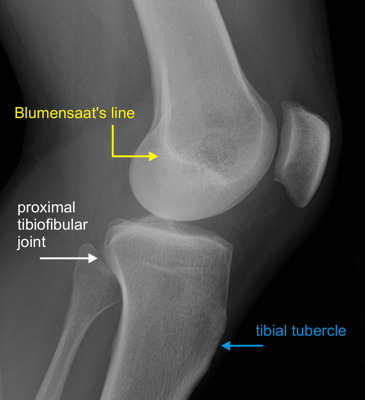

- Lower pole of patella should lie on a line projected anteriorly from the intercondylar notch (Blumensaat's line) with knee flexed to 30°
- Insall-Salvati ratio: ratio of patellar length to patellar tendon length should be 1.0.
- Ratio < 0.8 is patella alta, ratio > 1.2 is patella baja
 Normal AP knee
Normal AP knee

Normal lateral knee